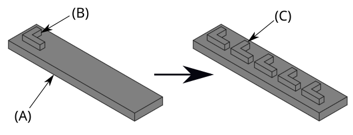

PartDesign LinearPattern/cs
|
PartDesign Lineární pole |
| Umístění Menu |
|---|
| Part Design → Transformation Features → Lineární pole |
| Pracovní stoly |
| PartDesign |
| Výchozí zástupce |
| Nikdo |
| Představen ve verzi |
| - |
| Viz také |
| PartDesign Multi Transformace |
Popis
Nástroj  PartDesign LinearPattern vytváří lineární vzor složený z jednoho nebo více prvků.
PartDesign LinearPattern vytváří lineární vzor složený z jednoho nebo více prvků.
{kind=link}

Pro lineární pole se používá deska ve tvaru písmene L (B) položená na základní desce (A, nazývané také podložka). Výsledek (C) je zobrazen vpravo.
Použití
Vytvoření
- Volitelně aktivujte správné těleso.
- Volitelně vyberte jeden nebo více prvků ve stromovém zobrazení nebo ve 3D pohledu.
- Nástroj lze spustit několika způsoby:
- Klikněte na tlačítko
 Lineární pole.
Lineární pole. - Z menu vyberte možnost Návrh součásti → Transformační prvky → Lineární pole.
- Klikněte na tlačítko
- Pokud není aktivní žádný blok a v dokumentu se nacházejí dva nebo více bloků, otevře se dialogové okno Je třeba aktivovat blok s výzvou k aktivaci jednoho z nich. Pokud je v dokumentu pouze jeden blok, bude aktivován automaticky.
- Otevře se panel úloh Parametry lineárního vzoru. Další informace najdete v sekci Možnosti.
- Stiskněte tlačítko OK pro dokončení.
Úpravy
- Proveďte jednu z následujících akcí:
- Poklepejte na objekt LinearPattern ve stromovém zobrazení.
- Klikněte pravým tlačítkem myši na objekt LinearPattern ve stromovém zobrazení a z kontextového menu vyberte položku /csUpravit lineární vzor.
- Otevře se panel úloh Parametry lineárního vzoru. Další informace najdete v sekci Možnosti.
- Stiskněte tlačítko OK pro dokončení.
Volby
- Vyberte režim:
- Transformovat těleso: Transformuje tvar celého základního prvku (výchozí nastavení). introduced in 1.0
- Transformovat tvary nástrojů: Transformuje jednotlivé tvary nástrojů u vybraných prvků.
- Přidání prvků:
- Klikněte na tlačítko Přidat prvek.
- Vyberte prvek ve stromovém zobrazení nebo ve 3D pohledu.
- Tento postup opakujte, chcete-li přidat další prvky.
- Odstranění prvků:
- Klikněte na tlačítko Odebrat prvek.
- Proveďte jednu z následujících akcí:
- Vyberte prvek ve stromovém zobrazení nebo ve 3D pohledu.
- Vyberte položku v seznamu a stiskněte klávesu Del.
- Klikněte pravým tlačítkem myši na položku v seznamu a z kontextového menu vyberte Odebrat.
- Tento postup opakujte, abyste odstranili další prvky.
- Pokud vzor obsahuje více prvků, může být jejich pořadí důležité. Viz PartDesign Kruhový vzor.
- Přidání prvků:
- Směr:
- Stiskněte tlačítko
 , abyste obrátili směr vzoru.
, abyste obrátili směr vzoru. - Zadejte referenční směr:
- Normální osa náčrtu: Osa Z náčrtu (k dispozici pouze u prvků založených na náčrtu).
- Vertikální osa náčrtu: Osa Y náčrtu (totožná).
- Vodorovná osa náčrtu: Osa X náčrtu (totožná).
- Konstrukční linie č.: Samostatný záznam pro každou knstrukční linii ve skice (tamtéž).
- Základní osa X: Osa X tělesa.
- Základní osa Y: Osa Y tělesa.
- Základní osa Z: Osa Z tělesa.
- Vybrat referenci…: Vyberte referenční přímku ve stromovém zobrazení nebo referenční přímku či hranu ve 3D pohledu.
- introduced in 1.0: Zvolte Způsob zadání délek:
- Rozsah: Zadejte Délku od daného bodu v prvním výskytu do stejného bodu v posledním výskytu.
- introduced in 1.0: Mezery: Zadejte hodnotu Mezery jako vzdálenost od daného bodu prvního výskytu k stejnému bodu následujícího výskytu. Pro n výskytů platí: Rozsah = (n-1) * Mezera.
- Zadejte počet výskytů (včetně původního prvku).
- Stiskněte tlačítko
- Směr 2: Stejné. introduced in 1.1
- Pokud je zaškrtnuto políčko Přepočítat při změně, zobrazení se bude v reálném čase aktualizovat.
Omezení
- Helper tools: New Body, New Sketch, Attach Sketch, Edit Sketch, Validate Sketch, Check Geometry, Sub-Shape Binder, Clone
- Modeling tools:
- Additive tools: Pad, Revolution, Additive Loft, Additive Pipe, Additive Helix, Additive Box, Additive Cylinder, Additive Sphere, Additive Cone, Additive Ellipsoid, Additive Torus, Additive Prism, Additive Wedge
- Subtractive tools: Pocket, Hole, Groove, Subtractive Loft, Subtractive Pipe, Subtractive Helix, Subtractive Box, Subtractive Cylinder, Subtractive Sphere, Subtractive Cone, Subtractive Ellipsoid, Subtractive Torus, Subtractive Prism, Subtractive Wedge
- Boolean: Boolean Operation
- Dress-up tools: Fillet, Chamfer, Draft, Thickness
- Transformation tools: Mirror, Linear Pattern, Polar Pattern, Multi-Transform, Scale
- Additional tools: Shape Binder, Involute Gear, Sprocket, Shaft Design Wizard
- Context menu: Suppressed, Set Tip, Move Object To…, Move Feature After…
- Preferences: Preferences, Fine tuning
- Getting started
- Installation: Download, Windows, Linux, Mac, Additional components, Docker, AppImage, Ubuntu Snap
- Basics: About FreeCAD, Interface, Mouse navigation, Selection methods, Object name, Preferences, Workbenches, Document structure, Properties, Help FreeCAD, Donate
- Help: Tutorials, Video tutorials
- Workbenches: Std Base, Assembly, BIM, CAM, Draft, FEM, Inspection, Material, Mesh, OpenSCAD, Part, PartDesign, Points, Reverse Engineering, Robot, Sketcher, Spreadsheet, Surface, TechDraw, Test Framework
- Hubs: User hub, Power users hub, Developer hub